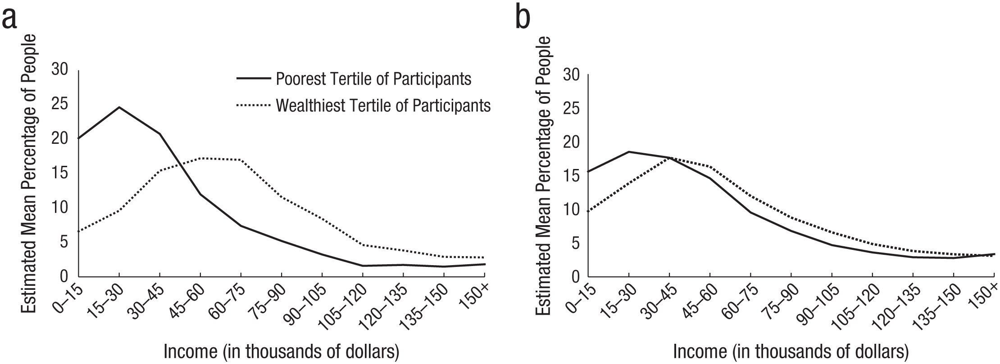
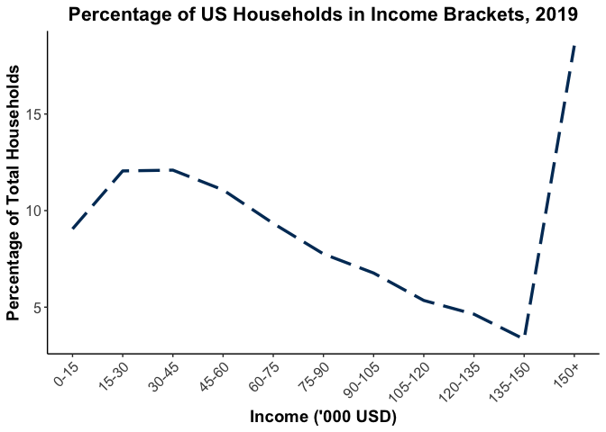

I set out to build a chart that shows the percentage of US population falling under each income bracket.
Inspiration drawn from reading this paper: Dawtry, R. J., Sutton, R. M., & Sibley, C. G. (2015). Why Wealthier People Think People Are Wealthier, and Why It Matters: From Social Sampling to Attitudes to Redistribution. Psychological Science, 26(9), 1389–1400. https://doi.org/10.1177/0956797615586560
My chart today will be based on the format of Figure 1 shown below, so that the chart can help my understanding of the paper.
 Figure 1 Charts a and b above (Dawtry et al., 2015) show 305 participants’ perception of wealth distribution in the United States. Chart (a) showed participants’ estimation of their social circles’ income, and chart (b) showed participants’ estimation of US household incomes.
About the paper: Researchers tested their hypothesis that the higher the participants’ own household incomes, and the higher their perceived household incomes of their social circles, the more likely the participants would assume that society as a whole is wealthier than it actually is.
# An Excel file downloaded from US Census
# "HINC-01. Selected Characteristics of Households by Total Money Income in 2019"
# https://www.census.gov/data/tables/time-series/demo/income-poverty/cps-hinc/hinc-01.html
# Manually copied and pasted 2 rows of data, and created CSV file.
library(tidyverse)
dat01A <- read_csv("files/HINC_01_2019.csv")
# checked on glimpse(), 1 row and 42 columns, need pivot_longer()
# save Total value for later use
Total <- 128451
dat01A <- dat01A %>%
pivot_longer(!Total, names_to = "income", values_to = "count") %>%
select(-Total) %>%
mutate(percent = (count/Total)*100,
groupnum = ceiling(row_number()/3)) %>%
mutate(groupnum_new = if_else(groupnum > 11,
"11",
as.character(groupnum*1))) %>%
mutate(groupnum_new = as.numeric(groupnum_new))
# Above: using mutate(), calculate y-axis in percent for x-axis,
# income brackets are 0 to 15,000 etc,
# that means each bracket contains 3 rows of dat01,
# using mutate() and based on row_number(), assign a group number for each row
# since x-axis highest income bracket is +$150,000
# while the census data contains many groups above that
# everything higher than $150,000 belongs to a single group
# assigning "11" for everything above $150,000 seems brute force.
# Below: Once we run group_by() the tibble would be unrecognizable
dat01A_group <- dat01A %>%
group_by(groupnum_new) %>%
summarize(added_bygroup = sum(percent, na.rm = 1)) %>%
# column names make no sense, rename them
rename(perc_aggregate = added_bygroup,
income_bracket = groupnum_new)
# Wanted to create a list with the x axis labels, then put directly into ggplot()
# Ended up not using.
# tb1 <- tibble(
# income_bracket = 1:11,
# x_labels = c("0-15", "15-30", "30-45", "45-60",
# "60-75", "75-90", "90-105", "105-120",
# "120-135", "135-150", "150+")
# )
ggplot(dat01A_group, aes(x = income_bracket, y = perc_aggregate)) +
geom_line(show.legend = FALSE, linetype = "longdash", color="#003865", size = 1.2) +
scale_x_continuous(name = "Income ('000 USD)",
breaks = c(1,2,3,4,5,6,7,8,9,10,11),
labels = c("0-15","15-30", "30-45", "45-60", "60-75",
"75-90", "90-105", "105-120", "120-135", "135-150", "150+")
) +
scale_y_continuous(name = "Percentage of Total Households") +
theme_classic() +
ggtitle("Percentage of US Households in Income Brackets, 2019") +
theme(plot.title = element_text(hjust = 0.5, face = "bold", size=16),
axis.text.x = element_text(angle = 45, hjust=1, size=12),
axis.text.y = element_text(size=12),
axis.title.x = element_text(size=14, face = "bold"),
axis.title.y = element_text(size=14, face = "bold"),
legend.margin = margin(6, 6, 6, 6))